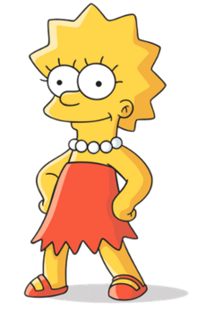

In what concerns the continuous evaluation solving exercises grade during the semester, you should submit until 23:59 of
(this exercise will still be available for submission after that deadline, but without counting towards your grade)
[to understand the context of this problem, you should read the class #05 exercise sheet]
In this problem you should submit a function as described. Inside the function do not print anything that was not asked!
The name of the .py source file you submit to Mooshak should NOT start with a digit (you will get an error if you submit it like that).

Lisa Simpson, Springfield’s young prodigy, has become fascinated with the Fibonacci sequence after reading about it in one of her advanced math books. She learns that this series, where each number is the sum of the two preceding ones, pops up everywhere in nature - from the spirals of seashells to the arrangement of petals on flowers. Intrigued, she decides to explore the sequence further and needs your help!
Write a function fibonacci(a, b, n) that given integers a, b and n returns a list with the first n numbers of the sequence that starts with the numbers a and b and then continues by having each subsequent number being the sum of the two previous ones, that is, a list S where:
The following limits are guaranteed in all the test cases that will be given to your program:
| 0 ≤ a,b ≤ 100 | The two first elements |
| 3 ≤ n ≤ 100 | Number of elements in the sequence |
| Example Function Calls | Example Output |
|---|---|
print(fibonacci(0,1,13)) print(fibonacci(2,4,10)) print(fibonacci(1,3,12)) |
[0, 1, 1, 2, 3, 5, 8, 13, 21, 34, 55, 89, 144] [2, 4, 6, 10, 16, 26, 42, 68, 110, 178] [1, 3, 4, 7, 11, 18, 29, 47, 76, 123, 199, 322] |
Content by Pedro Ribeiro and Bernardo Portela (DCC/FCUP), migrated from dcc.fc.up.pt/~pribeiro/aulas/ip2526/problems/ip047.html.